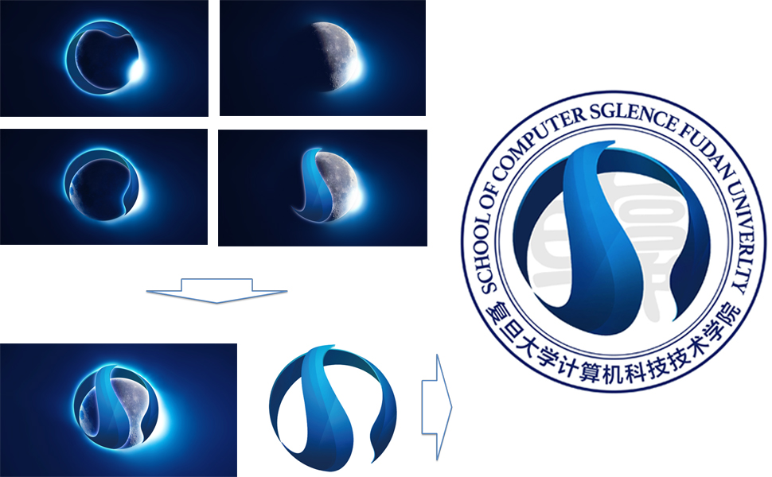
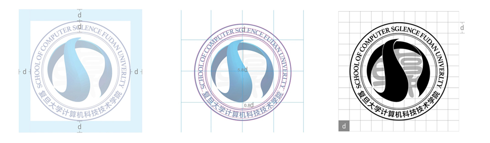

复旦大学计算机科学技术学院，一直坚信是计算机科技的力量，改变了我们生活、工作、娱乐及沟通的方式。正是科技驱动计算机科学技术学院不断革新，继续前行，与国际一流水平接轨。革故鼎新，是他们的品牌核心理念。
ADD从原点出发，取材于复旦大学的文化传统。 从《尚书大传·虞夏传》得知，校名“复旦”二字寓意 “日月光华，旦复旦兮”，意在自强不息。日与月，就镶嵌在复旦大学的校名之中。C顺时针旋转90度，寓意着学院不断前行的意志。C与S构成了日与月，象征着日月光华，它们相互缠绕、紧密合作，寓意着复旦大学与计算机科学技术学院的关系。科技蓝的色彩，正和学院革新的品牌价值相符合。
美观的背后是精致的制图
标识安全区域内不得放置其它图文信息
